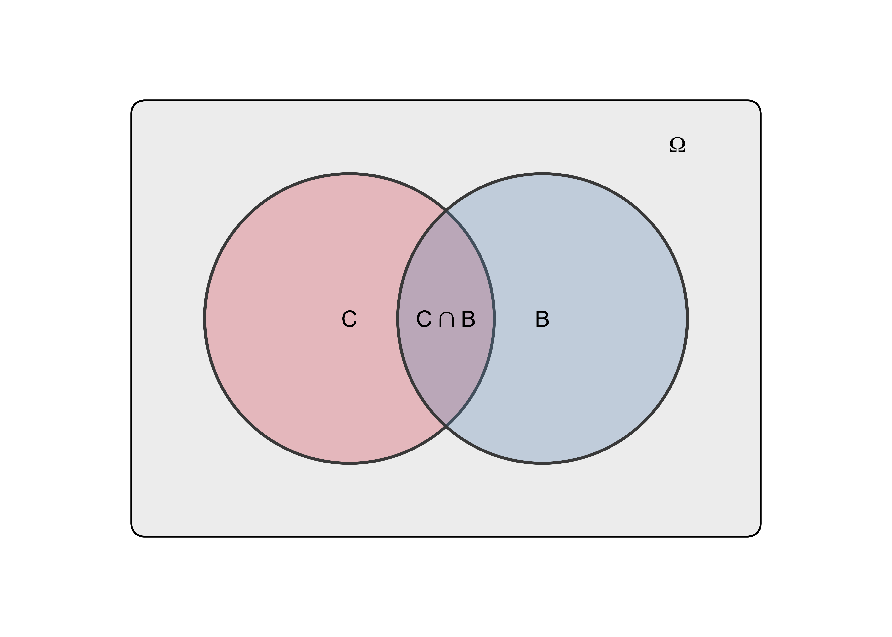

Reasoning | |||
|---|---|---|---|
|
| Valid | Invalid |
Premises | All true | Sound | Unsound |
Not all true | Unsound | Unsound | |
2 An introduction to inductive logic
In the previous chapter, we outlined a strategy to approach the complicated objects that social scientists typically aim to study. From a broad question about a theoretical variable (What are the determinants of human well-being?) and the formulation of hypotheses, our discussion led us to the task of building a statistical model designed to explain a set of data representing our variable of interest. Our hope is that our model, thanks to its simplicity, will help us learn something about the complicated processes that underlie our phenomenon of interest.
Unfortunately, there is an important difficulty that sneaked in along the way. To see it, imagine that a researcher wants to test the following hypothesis: The more human individuals have friends, the higher their well-being. He conducts a study among 200 individuals, measuring their well-being and how many friends they have. After some well-crafted statistical modelling he observes that, indeed, the number of friends of participants is an important explanation of his data. He interprets this result as follows:
Argument (1)
Statement 1: The more my participants had friends, the higher their well-being.
Statement 2: Therefore, the more human individuals have friends, the higher their well-being.
What our imaginary researcher did, was to present what he learned from his model (Statement 1) as a reason to accept his hypothesis (Statement 2). He made what logicians call an argument: a set of reasons presented in support of a conclusion. But this argument has a peculiar feature that makes it problematic to accept: Statement 1 applies to 200 participants (a relatively small set of people), whereas Statement 2 applies to humans in general (a larger set of people). We call this an inductive argument. And here is our problem: can we really say that Statement 1 justifies Statement 2?
The problem with this specific argument is in fact ubiquitous in empirical research (i.e., research based on observations). On the one hand, our questions and hypotheses typically claim a very broad relevance. As social scientists, we want to explain how social phenomena work for all humans or, at the very least, for a large set of humans, such as all the residents of a particular country. This large set, about which we want to learn something, is what we call a population. On the other hand, when we get to the part where we build a statistical model, we very rarely have access to the entire population. Instead, we are typically dealing with a smaller set of data drawn from the population in the context of a particular study. This smaller set of observations drawn from the population is called a sample. Our problem, then, can be expressed through the following question: can observations made in a sample justify drawing a conclusion about a population?
In this chapter1, we will define this problem from the perspective of logic. We will see that there is a kind of arguments - called deductive arguments – that we can safely trust. However, we will also see why deductive arguments cannot be solely relied upon: to build knowledge about the world, we need to use inductive arguments as well. We will then discuss the risks of accepting inductive arguments and how to tame such risks. Finally, we will discover the notion of set that will help us in the next chapter.
2.1 Arguments
Let us assume that, as researchers, we strive to make statements about the world that are true. This probably sounds trivial (if it doesn’t, you might want to take a look at Digression 2.1). But it is important to acknowledge that distinguishing true statements from false ones is rarely, if ever, self-evident. It’s not something that we just know. If I tell you “capitalism is the only economic system that works”, you would be justified to ask “why should I believe that?”. You would expect me to provide you with reasons to believe that such a statement is true. Such reasons, together with the conclusion they are meant to support form what logicians call an argument.
An argument is a set of reasons presented in support of a conclusion.
Because they specify the reasons that we have for accepting statements as true, arguments should greatly matter to us. But an argument is not necessarily a good one. If you ask me “why should I believe that capitalism is the only economic system that works?” and my answer is “because Margaret said so”, you would be right to remain unconvinced. Even if she said so, Margaret could be mistaken. This a bad argument. Our goal now will be to understand better what makes a good argument. For that purpose, let us first look a what an argument is made of.
What do you mean “true”?
If the phrase “we should strive to make statements about the world that are true” sounds naïve to you, you might have picked up the habit – from your readings or classes – of thinking that there is no such thing as “objective truth”, that truth is ‘relative’, ‘socially constructed’, etc. If that’s the case, you are not alone. This kind of claim is surprisingly common within certain circles of social scientists (Lynch, 2004; Sidky, 2020). So, it is worth taking a moment to consider what we should make of them.
Let’s first clarify in what sense I use the term “true”: A proposition is true only if it corresponds to a fact in reality (e.g., Chalmers, 1999; Rasmussen, 2014; Searle, 1995). For instance, the sentence “there is a box of chocolate in my fridge”, is a true proposition only if there indeed is a box of chocolate in my fridge. Thus, “truth” is a characteristic of certain propositions (for alternative definitions of truth, see Burgess & Burgess, 2011).
Notice how, defined this way, truth is objective: it has nothing to do with what I think – or indeed with what anyone thinks. I might have forgotten that there is a box of chocolate in my fridge, and thus mistakenly believe that the proposition “there is a box of chocolate in my fridge” is false. But my belief is irrelevant, it does not change the fact that the proposition is true. If I were to open the fridge and see that there is a box in there, my belief about the truth of the proposition would change but the proposition would not ‘become’ true: it would have been true all along.
If all this sounds obvious to you, that’s good. Because claims about the ‘socially constructed’ or ‘relative’ nature of truth are usually grounded in a misunderstanding of this simple point. That is, such claims ultimately rest on a conflation of two kinds of statements: those of the form “x is true” and those of the form “y believes x to be true” or “x passes for true among y” (the philosopher Susan Haack (1999, Chapters 5, 8) calls this the “passes for” fallacy). A typical example can be found in the work of Michel Foucault, where this conflation is cultivated through ambiguous language. Consider for instance this often quoted passage (Foucault, 2001, p. 131):
Truth is a thing of this world: it is produced only by virtue of multiple forms of constraint. And it induces regular effects of power. Each society has its regime of truth, its “general politics” of truth — that is, the types of discourse it accepts and makes function as true; the mechanisms and instances that enable one to distinguish true and false statements; the means by which each is sanctioned; the techniques and procedures accorded value in the acquisition of truth; the status of those who are charged with saying what counts as true.
If we keep in mind the difference between “truth” and “what passes for truth”, then the first sentence appears to make a radical claim: truth is “produced” (or, one might say, socially constructed). But when describing how this happens, the statement becomes ambiguous as to what exactly is produced. What does it mean that a society has “types of discourse it accepts and makes function as true”? Or that it has “mechanisms and instances that enable one to distinguish true and false statements”? Is the claim that (1) societies have institutions that influence what passes for true in that society? Or is it that (2) those societal institutions truly determine what is actually true in that society? If the claim is (1), then it is a convoluted way of saying something unremarkable. If the claim is (2), then it is obviously mistaken. The fact that, at the time of Galileo, the inquisition forbid any challenge to biblical geocentrism – the idea that the earth is immobile at the center of the universe – didn’t make geocentrism true. The earth didn’t wait for the permission of the inquisition to start orbiting around the sun. In sum, the claim that truth is somehow ‘constructed’ sounds plausible and profound only as long as “truth” and “what passes for truth” are used interchangeably. When the ambiguity is removed, the illusion of profundity dissolves. Try it yourself next time you encounter a similar claim.
In any case, this book assumes that empirical inquiry – and indeed any kind of inquiry – would be utterly futile without the notion of objective truth (e.g., Haack, 1999, Chapter 1). After all, what could we possibly learn from observing the world if nothing can be said to be objectively true?
Arguments are made up of basic statements called propositions. We might say that propositions are the building blocks of arguments. An important feature of propositions is that they are either true or false. Thus, if I say “you are sitting on a chair”, I am uttering a proposition because my utterance is true or false depending on whether you are actually sitting on a chair. But if I say “are you sitting on a chair?” or “sit on a chair!”, I am not uttering a proposition, because questions and orders cannot be said to be true or false.
Propositions are basic statements that are either true or false.
Two types of propositions form an argument: the premises and the conclusion. The premises are the propositions forming the basis on which the argument rests. They are the starting point of the argument. The conclusion, on the other hand, is the end point of the argument. It is the proposition which, according to the argument, is justified by the premises.
The premises are the propositions invoked to justify the conclusion.
The conclusion is the proposition inferred based on the premises.
In everyday talk and writing, arguments rarely come with clear labels indicating which parts constitute their premises and which part constitutes their conclusion. But they always have at least one premise and a conclusion. So, they can always be re-stated to make their structure more transparent. For instance,
Argument (2)
How do we know that human cognition2 has been shaped by natural selection? Because it depends on how the brain is organized. And the organization of the brain, like that of any other organ in the human body, has been shaped by natural selection.
We can re-write the argument as follows:
Argument (2’)
Premise 1: The organization of all organs of the human body has been shaped by natural selection.
Premise 2: The human brain is an organ of the human body.
Premise 3: Human cognition is shaped by the organization of the human brain.
Conclusion: Human cognition has been shaped by natural selection.
2.2 Deductive arguments
Not all arguments are of the same kind. Some can be trusted more than others. Deductive logic is concerned with identifying the kind of arguments that can be trusted the most, in the sense that they ensure a perfectly safe passage from premises to conclusion. Using the words of Ian Hacking (2001), we can say that deductive logic tries to identify “risk-free arguments”.
2.2.1 Validity
But what does it mean for an argument to be “risk-free”? Consider Argument (2), for instance:
Argument (3)
Premise 1: The cat is either dead or alive.
Premise 2: The cat is not dead.
Conclusion: The cat is alive.
The first premise tells us that one of two propositions – (1) the cat is dead; (2) the cat is alive – is necessarily true. Accepting that premise means accepting one of those two propositions. The second premise tells us that one proposition is not true. Thus, if we accept that second premise as well, we cannot escape the conclusion: it has to be true. If Premise 1 and 2 are both true, there is absolutely no way that the conclusion is not true. Logicians have a specific term to refer to this property: they say that the reasoning of such an argument is valid. For short, we can say: the argument is valid.
A deductive argument is valid if and only if the truth of all the premises necessarily implies the truth of the conclusion. Otherwise, it is invalid.
The notion of validity is important because some arguments may pose as risk-free, while they actually are not. They may appear intuitively compelling to us but they are not, in fact, valid. We say that they are invalid. Consider the following:
Argument (4)
Premise 1: If Trillian is hungry, then she starts eating.
Premise 2: Trillian starts eating.
Conclusion: Trillian is hungry.
Here the conclusion – although it could happen to be true – does not necessarily follow from the premises. Premise 1 tells us that, if Trillian is hungry, we can be sure that she starts eating. But it does not tell us that if Trillian starts eating, we can be sure that she is hungry. Thus, the fact that Trillian starts eating (Premise 2) does not necessarily imply that she is hungry. Trillian might simply be bored or trying to please a host who invited her for dinner, for instance. Argument (4) commits a fallacy, i.e., an error in reasoning. This particular fallacy is called “affirming the consequent”.
Note that whether an argument is valid or invalid depends on its form rather than its content. It doesn’t matter what the propositions that make up the argument refer to. To make that plain, we can re-write an argument by replacing propositions with arbitrary symbols, like letters. Argument (3), for instance, can be written as Argument (3’):
Argument (3)
Premise 1: The cat is either dead or alive.
Premise 2: The cat is not dead.
Conclusion: The cat is alive.
Argument (3’)
Premise 1: p or q.
Premise 2: not p.
Conclusion: q.
You can replace p and q by any pair of propositions you like, Argument (3’) will be valid3. And whenever you encounter an argument that can be re-written as Argument (2’), you know that this argument will be valid. This is why deductive logic is such a powerful tool: by identifying the forms of arguments that make them valid, it lets us distinguish valid arguments in any context.
2.2.2 Soundness
But there is a very important caveat to keep in mind. We have seen that a valid argument ensures that the conclusion is true if the premises are all true. That is an important “if”. It means that even if an argument is valid, it can lead to a false conclusion. This can happen if it is based on at least one false premise. Look at Argument (4), for instance:
Argument (5)
Premise 1: All scientists love statistics
Premise 2: All social scientists are scientists
Conclusion: All social scientists love statistics
Argument (5) is perfectly valid but I have no doubt that the conclusion is false. This is because the first premise is false.
Thus, a valid argument does not guarantee that its conclusion will be true. It also needs to be based on premises that are all true. Only if both conditions are satisfied – i.e., the argument is valid and all its premises are true – can we be sure that the conclusion true. It that case, we say that the argument is sound (see Table 2.1).
An argument is sound if and only if its reasoning is valid and all its premises are true. Otherwise, it is unsound.
2.2.3 Why not only use deductive arguments?
A valid deductive argument is the most trustworthy kind of argument: if its premises are true, it is sound, which means that we can be absolutely sure that its conclusion is true. So, if that’s the case, why not stick with that kind of argument? We could make sure to always start with true premises and then proceed to conclude through valid reasoning. This way, we would be sure to never end up with false conclusions. So why take the risk of relying on arguments that are not deductive?
Here is a reason: deductive arguments don’t give us any guarantee that their premises are true, they just take them for granted. So, how do we know that the premises are true? You might think: well, we can make other deductive arguments that establish the truth of the premises. But these new arguments will need new premises of their own. How do we know if those are true? We could go on. But we would only be delaying the inevitable. We need to start somewhere eventually.
Here is another way to see the problem. Deductive reasoning, by its very nature, only enables us to reach conclusions that are already contained in the premises. This means that, to arrive at a conclusion about facts in the real world, we would need premises that already tell us something about these real-world facts. Think about the kind of statements that we, researchers, are interested in. As social scientists in particular, we want to know if statements like “Income increases well-being”, “public education reproduces social inequalities” or “industrial societies foster an individualistic culture” are true. These are general statements about facts. And these can’t be derived from deductive reasoning without assuming other general factual statements that are logically related to your aimed conclusion. For instance,
Argument (6)
Premise (1): Anything that increases individuals’ ability to satisfy their needs also increases their well-being.
Premise (2): Income increases people’s ability to satisfy their needs.
Conclusion: Income increases well-being.
This argument, though valid, has only displaced our problem: it makes our conclusion depend on two other general statements of facts, premise (1) and (2), which we don’t know if they are true (premise (1) is especially suspect). This illustrates how, to deduce general statements of facts, we always need to assume other general statements of facts. This is getting us nowhere.
Fortunately, there other kinds of arguments than deductive ones. An alternative that lets us avoid this problem consists in using statements about particular (as opposed to general) facts as premises. The key advantage is that we can make statements about particular facts based on what we directly observe. And, to the extent that statements about what we observe can be considered true4, this means that we would start from true premises. Such arguments based on (observed) particular facts are inductive arguments.
2.3 Inductive arguments
We have seen that valid deductive arguments are “risk-free”: if their premises are true, their conclusion is necessarily true. Inductive arguments are not like that: even with true premises, the truth of the conclusion is never guaranteed. They are “risky” arguments (Hacking, 2001).
Defining inductive arguments precisely is not an easy thing. We will worry about that later. For now, let us consider a couple of examples:
Argument (7)
Belgian people are not very polite. I can tell because my neighbour is Belgian and he is very rude.
Argument (8)
Observation of hundreds of societies of both humans and chimpanzees systematically support the view that the former are much more predisposed to cooperation than the latter.
Argument (7) and (8) both use observations as evidence in support of a conclusion. Statements about observations are their premises. But there are many ways in which observations can be misleading. That makes these arguments risky. They are not valid arguments (in the sense defined in Section 2.2.1).
But if both arguments are risky, Argument (8) seems, in some sense, better than Argument (7). Can we say that Argument (8) is less risky? In practice, pretty much everyone would answer positively. And that is what we are going to assume moving forward. But you should be aware that this apparently simple question hides a very difficult philosophical problem known as the “problem of induction”. The most philosophically-minded will find a brief introduction to this problem in Digression 2.2. But, for our purpose, we can take for granted that some inductive arguments are less risky than others. Let us now examine why that is.
The problem of induction
As we saw in the introduction, most scientific knowledge necessarily relies on observations. How could we know how planets move, brains work, or humans behave, without observing them? But, because we can never observe every single planet, human, or brain at every single moment of their existence, any general conclusion we draw is based on our observations of a limited portion of reality. In short, we draw conclusions based on inductive arguments.
In the 18th century, the Scottish philosopher David Hume (1748/2007) posed what is arguably the toughest philosophical challenge science has ever had to face: he made the case that inductive arguments have no rational justification whatsoever. Any inductive argument, Hume says, is fundamentally flawed.
To understand Hume’s argument, imagine yourself in a room with him. He lights up a candle, points towards it, and the following dialogue ensues:
[Hume] What is going to happen if you touch this flame?
[You] Well, it’s going to hurt me.
[Hume] How do you know?
[You] I did it before and it hurt.
[Hume] But how do you know that what happened last time with another flame will happen this time with this flame?
[You] If it happened only once or twice that I was hurt immediately after touching a flame, it could be a coincidence. But I tried many times with many flames, always with the same result. Surely this means that touching any flame causes me to feel pain.
[Hume] Are you certain? After all, you did not directly perceive any ‘causing’ (whatever this word means). The only thing you did perceive was a succession of two events: you touching a flame, then pain.
[You] But if this succession has never failed to happen, no matter how many times I tried, surely I can conclude that reality works that way, that there is some sort of law of nature that connects these two events.
[Hume] My friend, Bertrand, had a chicken that thought so. Every single day of the chicken’s life, it saw Bertrand coming and, then, the chicken got fed. “Here is a law of nature”, thought the chicken, as those two events never failed to be connected. Every single day, until the last one: Bertrand came and the chicken was cooked for dinner.5
Hume challenges us to explain what makes any inductive argument better than that of the chicken. His challenge can be summarized as follows: when we experience things (repeatedly) occurring together (e.g., touching a flame and feeling pain; the shape of a swan and the color white; twenty-four hours passing and the sun rising), we are tempted to believe that they will co-occur again in the future and/or have co-occurred similarly in the past. But no reasoning justifies that belief. Only an intuitive assumption that nature does not change its course. If we are asked to justify our belief that nature does not change its course, the only reason we can provide is: “because so far, in my experience, it hasn’t changed its course”. Thus, we end up using an inductive argument to justify inductive arguments. We are guilty of circular reasoning (a brilliant exposition of the problem can be found in Russell, 1912/2001, Chapter 6).
The most influential answer to Hume’s challenge came from the philosopher Karl Popper (1959, 1979). Popper’s solution is to avoid the problem entirely: Hume is right, Popper concedes, we cannot justify inductive arguments. We cannot infer the truth of general statements based on particular observations. But we don’t have to. Instead, we can show that some general statements are false by finding observations that contradict them. This is called falsification.
Take the statement “All swans are white” (Popper, 1979). Trying to prove it true by observation would be futile: I could travel around the world and see as many white swans I like, I would have no guarantee that the next one would not be black. However, suffice it that I observe one single black swan to prove deductively that the initial statement is false:
Premise 1: If all swans are white, then any particular swan is white.
Premise 2: This particular swan is black.
Conclusion: Not all swans are white.
Building on this idea, Popper’s view of empirical science’s progress is through the elimination (i.e., falsification) of false theories, rather than through the confirmation of true theories. This is a very smart move. Unfortunately, trying to use this falsification strategy to test real scientific hypotheses leads to important difficulties. For instance, deductive falsification is not applicable for hypotheses that have a statistical form (e.g., 90% of swans are white). Moreover, if simple statements like “all swans are white” have the merit of displaying the logic of falsification clearly, their simplicity conceals the fact that, in real scientific practice, both the theories themselves and the testing situations usually assume myriads of interrelated statements (e.g., theories that justify our measurement procedures). Thus, if an observation contradicts our prediction, it is not clear which statement exactly has been falsified.
To this day, Hume’s problem remains on open one that philosophers are actively trying to answer. And there currently are convincing proposals which, contrary to Popper’s, attempt to justify induction instead of avoiding it completely. Even sketching current discussions on this topic would be too ambitious, but the interested reader can find important contributions in Mayo (1996), Norton (2021), and Schurz (2019). Mayo’s (1996) approach, in particular, fits well with the view of data analysis that we will develop in later chapters.
2.3.1 Samples and populations
The most frequent kind of inductive argument takes the following form. You want to draw some factual conclusion about a set of “objects” (e.g., all humans, all people residing in a country, all potatoes). This set is your population. But accessing every object in your population is impossible in practice. Instead, you only have access to a subset of your population. This is called a sample. You then use observations made on your sample as a premise to justify your conclusion about the population.
A population is a set of object about which we want to draw a factual conclusion.
A sample is a subset of the population.
Imagine that you just taught a data analysis class to 100 students and you would like to know if they understood. You say “I made an exercise to see if you understood. If you can answer correctly, it means that you understood the class material”. There is a student that volunteers to do the exercise and she answers correctly. You might reason:
Argument (9)
Premise: This one student who volunteered understood the class material.
Conclusion: Most students in the class understood the class material.
Even though you were careful to use “most students” instead of “all students” in your conclusion, that is a very risky argument. If this student in particular volunteered, it might be because she was confident that she understood. For all you know, all other students might have failed to understand. So, instead of relying on a volunteer, you might pick a student at random:
Argument (10)
Premise: This one student picked at random understood the class material.
Conclusion: Most students in the class understood the class material.
This is better. Since you picked a student randomly, there is no reason to expect her or him to be different from most other students. But the argument is still quite risky. Even if most students in the class did not understand, it could be that a single one picked at random happens to be one of those who did understand. That would not be so unlikely. Hence, it could still be that most students did not understand. So, instead of picking one student at random, you might decide to pick 10 of them:
Argument (11)
Premise: These ten students picked at random understood the class material.
Conclusion: Most students in the class understood the class material.
This is still risky, but less so because the conclusion is based on a larger sample, i.e., it is based on more data. One way to see this is to imagine that your conclusion is actually wrong: most students did not understand. If that were the case, would you expect that all ten students picked at random happen to be among the minority who understood? That sounds very unlikely.
This imaginary situation illustrates two general principles to judge how good inductive arguments involving a sample and a population are. These two principles are shown in Box 2.3.
Two virtues of inductive arguments
Random sampling: Inductive arguments based on a sample drawn at random from the population are less risky than those based on a non-random sample.
Sample size: Inductive arguments based on a comparatively large sample drawn are less risky than those based on a comparatively small sample.
In the above examples, arguments all concluded about the population based on a sample. But this is only one among the three forms that an argument about samples and populations can take. Importantly, the principles stated in Box 2.3 apply to these three forms of inductive arguments.
Three types of inductive arguments
From sample to population:
Premise: Statement about a sample.
Conclusion: Statement about the population.
From population to sample:
Premise: Statement about the population.
Conclusion: Statement about a sample.
From sample to sample:
Premise: Statement about a sample.
Conclusion: Statement about another sample.
2.3.2 Probability
In everyday talk, when we utter risky arguments, we often signal this risk by attaching expressions like “probably” or “it is likely that” to our conclusion. We might thus reformulate the conclusion of Argument (11) as “Probably, most students understood the class material”. For practical purposes this is often enough. But can we be more specific and assign a precise value to the risk?
The notion of probability can help us do that. We all know intuitively how to use probability in the context of certain arguments that go from a population to a sample (see Box 2.4). Imagine, for instance, that I have a bag with 10 balls inside, 5 of which are black and 5 of which are white. If I pick a ball at random, what is the probability that I pick a black one? We all know intuitively understand that the probability is 50%, or 1/2.
Now consider the same situation, and imagine that you pick a ball at random from the bag but don’t look at it. Then you say:
Argument (12)
Premise: There are 5 white balls and 5 black balls in the bag.
Conclusion: The ball that I picked at random is black.
What value would you assign to the risk of this argument? You got it: 1/2. If the premise is true, you have a 50% probability of being wrong with that conclusion.
We will learn more about probabilities and how to compute them in the next chapter. But before that, we need the notion of a set.
2.4 Reasoning with sets
There is a branch of mathematics called Set theory that directly builds on logic. Unsurprisingly, it is based on the notion of set. We will define a set as follows:
A set is a collection of objects considered as one object. The objects which are part of a set are called its members or its elements.
Sets can be given a rigorous mathematical definition. But we will leave that aside. What matters, for our purpose, is that the notion of set can make some arguments easier to evaluate. This is the case for arguments that use quantifiers like “all”, “some”, or “none”, because they can be represented through relations between sets. Most importantly, representation of events in terms of sets will prove useful to understand probabilities in the next chapter.
An example is shown in Figure 2.5, where Argument (5) is represented as the relation between sets in a diagram6. Through the diagram, we can see that, if we accept the first premise (placing the blue set completely inside the green set) and the second premise (placing the red set completely inside the blue set), we cannot escape the conclusion (the red set cannot be placed anywhere but fully within the green set).
Argument (5)
Premise 1: All scientists love statistics
Premise 2: All social scientists are scientists
Conclusion: All social scientists love statistics

While visualizing relations between sets in diagrams is intuitive, drawing sets is not very practical (especially if you are considering many sets). It is thus useful to have symbols to express set relations. Symbols that will be important for us are shown in Table 2.2.
Let us use a concrete example to make sense of those symbols. Among the set of all humans (\(\Omega\)), some of them like chocolate (\(C\)) and some of them like Biscuits (\(B\)). These sets are represented with a Venn diagram in Figure 2.6. Using symbols, we can create expressions that designate new sets:
- \(C \cap B\): Humans who like both chocolate and biscuits.
- \(C \cup B\): Humans who like chocolate or biscuits or both.
- \(C \oplus B\): Humans who either like chocolate or biscuits but not both.
- \(C \setminus B\): Humans who like chocolate but not biscuits.
- \(\sim C\): Humans who do not like chocolate.
We can also make propositions about sets. For instance:
- \(B \subset C\): The set of humans who like biscuits is a subset of the set of humans who like chocolate. In other words, all humans who like biscuits also like chocolate.
- \(B \cap C = \emptyset\): The set of humans who like both chocolate and biscuits is empty. In other words, among humans, liking chocolate and liking biscuits are mutually exclusive.
| Symbol | Name | Example | Pronunciation |
|---|---|---|---|
\(\cap\) |
Intersection |
\(A \cap B\) |
A and B |
\(\cup\) |
Union |
\(A \cup B\) |
A or B (inclusive) |
\(\oplus\) |
Exclusive or |
\(A \oplus B\) |
A or B but not both (exclusive) |
\(\setminus\) |
Set difference |
\(A \setminus B\) |
A but not B |
\(\subset\) |
Proper subset |
\(A \subset B\) |
A is a subset of B |
\(\sim\) |
Negation |
\(\sim A\) |
Not A |
\(\Omega\) |
Omega |
Universal set |
|
\(\emptyset\) |
Phi |
Empty set |

This chapter and the next very much relied upon Ian Hacking’s (2001) fantastic Introduction to Probability and Inductive Logic.↩︎
The term “cognition” refers to information processing happening in the brain. To use simple terms, we can say “thought processes”.↩︎
As long as p and q are not the same proposition.↩︎
Although scientists typically take it for granted, whether the truth of observational statements is supported by our experience is debated among philosophers. This debate arises out of the fact that observational statements appear to be “theory-laden”: they always seem to imply assumptions that go beyond our direct experience. A solution to this problem lies in the idea that the meaning of words can be learned by “ostensive definition” (Haack, 2003; Schurz, 2013), which is a fancy way of saying that we learn the meaning of a word by being shown what it refers to.↩︎
The story of the chicken is adapted from Russell (1912/2001, p. 35).↩︎
This is called an Euler diagram.↩︎